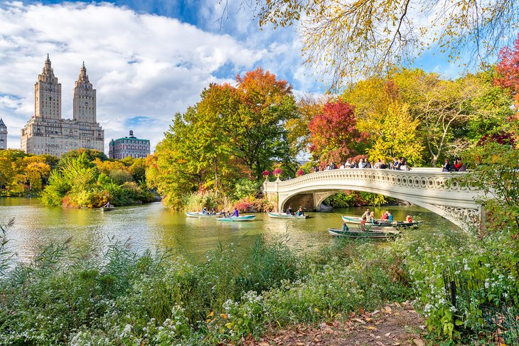
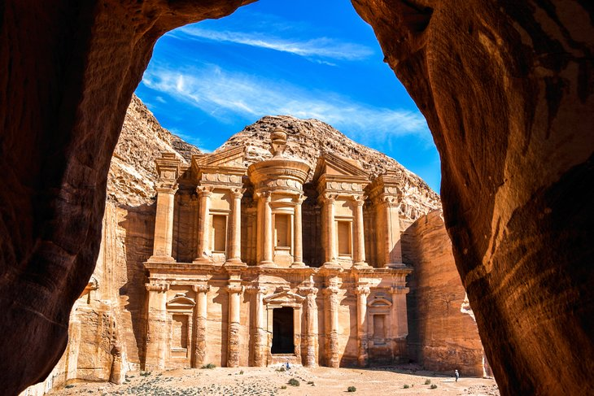

Best Tourist Destinations in the World to Visit
Whether you choose to travel out of curiosity or to unwind, the world has thousands of tourist attractions for you to choose from. From tropical islands and national parks to great monuments and ancient cities, it all comes down to where you want to explore. Hard to say that one particular location is the best tourist destination.
1. BORA BORA
Bora Bora is a tiny island approximately 6 miles long, but it is a beautiful place to visit and a palace to enjoy your vacation despite that fact. It is known as the ‘Pearl of the Pacific’ due to the greenery and high peak dormant volcanoes surrounding the beautiful blue water. Bora Bora is a highly luxurious resort that provides amenities across the beach as the city’s income, just like Singapore, depends primarily on tourism. Apart from the beach, you must explore the Bora Bora city called Vaitape and can even go on a hiking trip on Mount Otemanu. So, if you need to relax, then this is your destination.
2. CENTRAL PARK, NEW YORK CITY
Loved by generations of New Yorkers and by people from around the world, Central Park is one of the most famous public spaces in the world. Backdrop to countless movies and television shows, the park's walkways, lakes, and historical sights have been drawing city dwellers and visitors since it was first created in 1858. Some fun things to do in Central Park include taking a horse drawn carriage ride through the park, visiting the Strawberry Fields Forever area and Imagine monument dedicated to the late John Lennon, renting a row boat, or just strolling under the towering trees. If you find yourself in the park in the cold season, ice-skating is one of the most popular things to do in New York in winter. Going ice skating with your sweetie is also a romantic thing to do in New York.
3. Corcovado and Cristo Redentor, Rio de Janeiro
Keeping a watchful eye over the citizens of Rio de Janeiro from his perch atop Corcovado mountain is the stunning statue of Cristo Redentor. This huge 30-meter-high statue with its arms wide open in a welcoming gesture has been one of Rio's top tourist attractions since 1931. The harbor of Rio de Janeiro is one of the 7 natural wonders of the world. The views from the top of the 709-meter Corcovado look out over this beautiful sight, including Sugarloaf Mountain and the city perfectly poised for beautiful photographs. The best way to get to the top is a ride up through the forests of the Tijuca National Park on the 3.5-kilometer Corcovado Rack Railway.
4. The Colosseum, Rome
The most famous and largest structure still standing from the Roman Empire, the Colosseum is also the biggest attraction of modern-day Rome. It's been a bucket-list destination of travelers for generations. And it does not disappoint.Set in the heart of the city, the Colosseum is an easy place to visit. Direct flights from around the world land in Rome daily, making it a destination you can visit in a weekend if you choose. Wander through Rome's ancient streets, tour the colosseum, and if time allows, plan a trip to other areas of Italy.

5. Petra, Jordan
You may have an Indiana Jones feeling as you walk through a 1.2-kilometer-long narrow crack in the sandstone hills and emerge into a hidden city. First built over 2,000 years ago and lost to the outside world for 600 years, the city was only discovered in 1812.Stunning buildings are carved directly into the red rock walls and are wonderfully preserved, just begging to be explored and photographed.If you arrive early, an eerie silence, coupled with long shadows, give this abandoned city a special feel.
